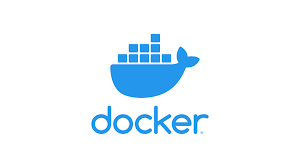

Introduction à l'Installation de Docker sur Linux et Windows

Partie 1: Docker c'est quoi en fait ?
Docker permet d'empacter ses applications sous forme d'image et de les partager à n'importe qui. Imaginez cela comme un .exe d'un windows, à la difference que l'image peut tourner n'importe où et que vous embarquez pas juste du code source, mais tout un système ! cela permet de déployer une base de donnée en quelque secondes par exemple, vous épargnant une longue installation et une potentiel pollution de votre système, car les conteneurs dockers sont completement isolés, exit fichiers d'installations et autres clé de registres.
-
Les images
Les images sont tout simplement le "binaire". C'est à dire que vous pouvez les télécharger ou les publier, mais en tant que tel ce n'est que de la donnée.
-
Les conteneurs
Un conteneur est l'execution d'une image. Vous pouvez ensuite interagir avec comme nous allons voir dans la suite de ce cours.
Partie 2: Les images
Ces dernières sont téléchargeable gratuitement sur Docker hub.
Étape 2.1 : Télécharger une image
Vous pouvez télécharger l'image d'exemple que nous allons executer dans la suite de ce cours:
Il est possible de téléchargé une version spécifique d'une image de cette manière, on appelle ces dernières des tag:
Étape 2.2 : Listez vos images
Vous pouvez voir vos images téléchargés grâce à
- Exercice: Allez sur docker hub et trouvez une image mysql. Téléchargez là et trouvez là dans la liste de vos images.
- Exercice: Trouvez comment pull spécifiquement l'image de mysql 5. Téléchargez là et trouvez là dans la liste de vos images.
Partie 3: executer un conteneur
Étape 3.1 : Docker run
Il faut maintenant pouvoir executer votre image. la commande de base est
Vous pouvez constater ce que fais cette commande avec l'image de démo par defaut de docker:Info
Notons que si l'image n'a pas été déjà téléchargée elle l'est au démarrage de la commande.
Étape 3.2 : Mapping de ports
Bon en l'état votre conteneur ne pourra pas faire grand chose, en général nous voulons pouvoir acceder à l'application qui tourne dedans via un port. Par exemple quand vous dévéloppez dans un framework, vous allez executer une commande pour faire tourner votre site web et y acceder via localhost:<PORT UTILISE PAR LE FRAMEWORK>.
Nous pouvons donc utiliser le mapping de ports.
Le concept est simple: lié un port de votre conteneur à votre ordinateur. pour ce faire nous utilisons l'option -p <NUMERO PORT ORDINATEUR>:<NUMERO PORT CONTENEUR>.
Prenons pour exemple l'image téléchargé précedemment. C'est une reproduction du jeu mario bros développé en javascript et fait pour tourner dans un navigateur, de base sur le port 80. Exécutez la de cette manière:
connectez vous à localhost:8080 dans votre navigateur pour constater que le jeu apparait (Aller vous avez bien droit à une petite partie avant de passer à la suite).
- Exercice: Faite tourner le jeu sur un autre port que le port 8080.
Étape 3.3 : execution en arrière plan
Vous pouvez executer une image en arrière plan avec l'option -d.
- Exercice: Executez l'image mario en arrière plan.
Étape 3.4 : liste, arret reprise et suppression
Vous pouvez lister les conteneurs tournant sur votre machine avec:
Vous pouvez stopper un conteneur de cette manière:
Vous pouvez relancer un conteneur stoppé avec:
Vous pouvez supprimer un conteneur stoppé avec:
- Exercice: Stoppez, relancez puis supprimez le conteneur mario, en constatant l'accessibilité dans votre navigateur à chaque étape.